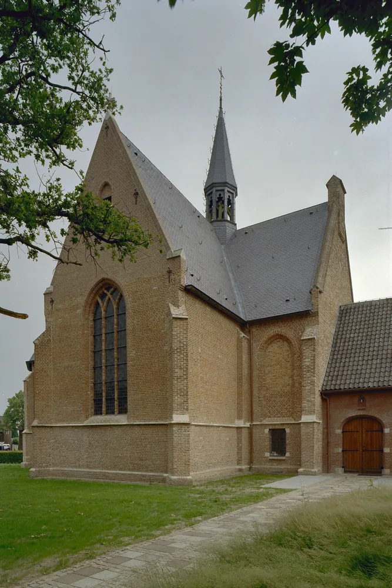

ملاحظة منهجية
هذه بداية الرسم النسبي وليست شجرة نهائية. لا تُدمج الألقاب المتشابهة تلقائياً. روابط الزواج والوالد/الطفل مأخوذة من فهرس سجل الرعية، أما روابط الأرض والجوار فتحفظ كطبقة أرشيفية منفصلة.

هذه بداية الرسم النسبي وليست شجرة نهائية. لا تُدمج الألقاب المتشابهة تلقائياً. روابط الزواج والوالد/الطفل مأخوذة من فهرس سجل الرعية، أما روابط الأرض والجوار فتحفظ كطبقة أرشيفية منفصلة.